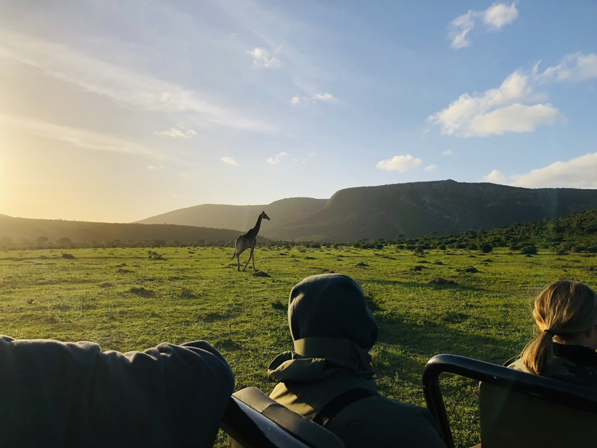

About me
My name is Markus Karlsson and I'm a 27 year old guy from Gothenburg in Sweden. I live with my girlfriend Lisa and we love to travel and enjoy life. The best trip so far is South Africa back in 2018. Ever since I watched The Lion King as a kid I've always dreamed to meet these beautiful animals in the wild. If I don't hanging out with friends or family I spent the most of my time at the ice hockey rink trying to catch some pucks. Two other big interests of mine are cooking & music. The perfect night for me is cooking a nice dinner in great company before heading to a concert and experience some live music.
Work experience
Since 2011 I've been working at different warehouses and some other places. I started at Swedish Match after my graduation from upper secondary school. Between 2011-2016 I worked for the company when they suddenly decided to move all the business to Stockholm. I decided not to follow, instead I went on a two month trip to Australia & New Zeeland on my own. That's something I'll never regret, I learnt so much meeting new people and cultures from all over the world and saw an extraordinary nature. Back home in Sweden again I started to work with my old boss from Swedish Match at a company called Brammer. I stayed there between 2016-2018 when it was time to lose my job for the second time. I moved on to Volvo for a short while when I felt it was time to do something else. By playing hockey I met a guy in 2019 who had recently started a "digital foodcourt" with his brother focusing on sustainable food. Unfortunately they couldn't offer me a full time job at this moment in time but it was still a great experience.
Education
- Kitas Gymnasium 2007-2010, Samhäll - ekonomi